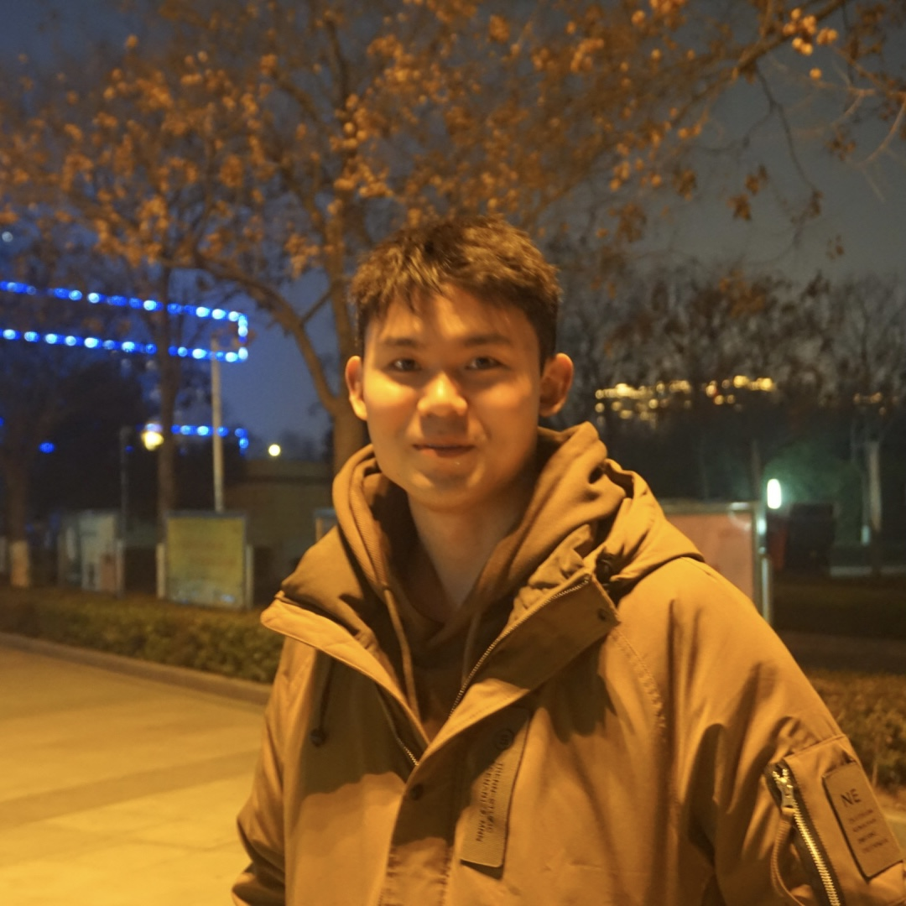

|  |
Ph.D. student, |
Currently I am a first-year Ph.D. student under the
supervision of
Prof. Junjie Chen .
Research Interests: SE4AI, AI4SE.
Note: † refers to the first student author.
[Pre-print] Enhanced Fairness Testing via Generating Effective Initial Individual Discriminatory Instances
Minghua Ma, Zhao Tian†, Max Hort, Federica Sarro, Hongyu Zhang, Qingwei Lin, Dongmei Zhang
arXiv:2209.08321, 2022
[ASE'23] On-the-fly Improving Performance of Deep Code Models via Input Denoising (CCF-A)
Zhao Tian, Junjie Chen, Xiangyu Zhang
International Conference on Automated Software Engineering,
2023.
[ASE'23] Code Difference Guided Adversarial Example Generation for Deep Code Models (CCF-A)
Zhao Tian, Junjie Chen, Zhi Jin
International Conference on Automated Software Engineering,
2023.
[ICSE'23] Achieving Last-Mile Functional Coverage in Testing Chip Design Software Implementations (CCF-A)
Ming Yan, Junjie Chen, Hangyu Mao, Jiajun Jiang, Jianye Hao, Xingjian Li, Zhao Tian, Zhichao Chen, Dong Li, Zhangkong Xian, Yanwei Guo, Wulong Liu, Bin Wang, Yuefeng Sun, Yongshun Cui
International Conference on Software Engineering,
2023.
[ASE'22] Learning to Construct
Better Mutation Faults (CCF-A)
Zhao Tian, Junjie Chen, Qihao Zhu, Junjie Yang, Liming
Zhang
International Conference on Automated Software Engineering,
2022.
🏆 ACM SIGSOFT Distinguished Paper Award
[ICPP'20] XShot: Light-weight Link
Failure Localization using Crossed Probing Cycles in SDN
(CCF-B)
Hongyun Gao, Laiping Zhao, Huanbin Wang, Zhao Tian, Lihai
Nie, Keqiu Li
International Conference on Parallel Processing, 2020.
[ICPADS'19] Deeplive: QoE
Optimization for Live Video Streaming through Deep Reinforcement
Learning (CCF-C)
Zhao Tian, Laiping Zhao, Lihai Nie, Peiqi Chen, Shuyu Chen
International Conference on Parallel and Distributed Systems,
2019.
An Anomaly Detection Method for Time Series KPI Data
Patent for Invention, Publication Patent Number: CN112446002A
An Inverse Design based Simulation Platform for Biomass Gasifier
Control
Software Copyright, Publication Patent Number: 2020SR1160919
Inverse Designer of Organic Waste Gasification
Software Copyright, Publication Patent Number: 2019SR1154686
Reviewer: IEEE Systems Journal 2022
Sub-reviewer: ICST 2024, ISSTA 2023, ESEC/FSE 2023, Internetware 2023, ASE 2023, FCS 2023, Internetware 2023, Chinese Journal of Computers 2023, ESEC/FSE 2022, ASE 2022, Chinese Journal of Software 2022
Technical Partner, Hokdo, Beijing [2021.05 - 2022.05]
Algorithm Engineer, Kuaishou Technology, Beijing [2020.10 -
2021.02]
Software Engineer, Neutech, Tianjin [2020.03 - 2020.06]
2022, Prototype Research Tool Award 2nd Place, CCF ChinaSoft 2022
2022, ACM SIGSOFT Distinguished Paper Award, ASE 2022
2022, National Scholarship, Ministry of Education
2021, Outstanding Graduate Students, Tianjin University
2021, Huawei Scholarship
2019, First-Class Scholarship, Tianjin University
2019, First Prize of Global Artificial Intelligent Network
Transmission Competition (AITrans)
2019, Science and Technology Talent Scholarship, Tianjin
University
2018, Xiongtao Scholarship
...